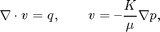
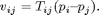
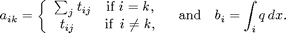
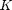
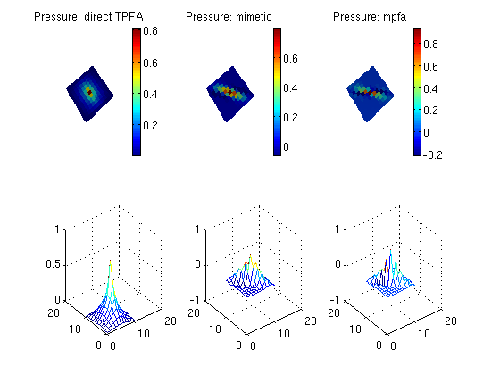

Compare Mimetic, MPFA and TPA Pressures Solvers
Use the two-point flux approximation (TPFA) method, multi-point flux approximations methods and Mimetic methods to solve the single-phase pressure equation

for a two-dimensional Cartesian grid with anisotropic but homogeneous permeability, a single well and zro Dirichlet boundary conditions. The problem solved in this example is the same as in the tutorial "Comparing Monotonicity", and more a detailed description of the model setup is shown there.
The main idea of the TPFA method is to approximate the flux v over a face f by the difference of the cell centered pressures in the neighboring cells (sharing the face f) weigthed by a face transmissibility T:

The pressure in each cell is approximated by solving a linear system Ap = b. When ignoring wells, sources, and bc, A and b are given by

Once the pressure is known, the flux is calculated using the expression given above.
In the same manner, the MPFA method approximate the flux v over a face f as a linear combination of the cell pressure and cell pressures in neighbor cells sharing at least one vertex with the face f.
The mimetic method approximates the face flux as a linear combination of cell pressures and face pressures. Only in special cases is it possible to make a local stencil for the face flux in terms of cell pressures, while the stencil for the flux in terms of face pressures is always local.
In this example we show non-monotone solutions to the pressure equation that arise from both the MPFA-method and the Mimetic method.
Contents
Define and process geometry
Construct a Cartesian grid of size 10-by-10-by-4 cells, where each cell has dimension 1-by-1-by-1. Because our flow solvers are applicable for general unstructured grids, the Cartesian grid is here represented using an unstructured formate in which cells, faces, nodes, etc. are given explicitly.
nx = 11; ny = 11;
G = cartGrid([nx, ny]);
G = computeGeometry(G, 'Verbose', true);
Computing normals, areas, and centroids... Elapsed time is 0.000088 seconds. Computing cell volumes and centroids... Elapsed time is 0.000381 seconds.
Set rock and fluid data
The only parameters in the single-phase pressure equation are the permeability , which here is homogeneous, isotropic and equal 100 mD. The fluid has density 1000 kg/m^3 and viscosity 1 cP. We make a non diagonal rock tensor
theta=30*pi/180; U=[cos(theta),sin(theta);-sin(theta),cos(theta)]; rocktensor = U'*diag([0.1,100])*U; rocktensor =[rocktensor(1,1),rocktensor(1,2),rocktensor(2,2)]; %rocktensor =[rocktensor(1,1),rocktensor(2,2)]; %rock.perm = repmat(100, [G.cells.num, 1]) .* 1e-3*darcy(); rock.perm = repmat(rocktensor, [G.cells.num, 1]) .* 1e-3*darcy(); fluid = initSingleFluid('mu' , 1*centi*poise , ... 'rho', 1014*kilogram/meter^3); gravity off
Introduce wells
We will include two wells, one rate-controlled vertical well and one horizontal well controlled by bottom-hole pressure. Wells are described using a Peacemann model, giving an extra set of equations that need to be assembled. We need to specify ('InnerProduct', 'ip_tpf') to get the correct well model for TPFA.
The first well is vertical well (vertical is default):
- completion in cells: cellsWell1
- controlled by production rate = 1.0 [m^3/d]
- radius = 0.1. [m]
cellsWell1 = sub2ind(G.cartDims,floor(nx/2)+1,floor(ny/2)+1); radius = .1; % well with wellindex calculated for TPFA bhp=1; W = addWell([], G, rock, cellsWell1, ... 'Type', 'bhp', 'Val', bhp*barsa(), ... 'Radius', radius, 'InnerProduct', 'ip_tpf'); % well with wellindex calculated for MIMETIC W_mim = addWell([], G, rock, cellsWell1, ... 'Type', 'bhp', 'Val', bhp*barsa(), ... 'Radius', radius, 'InnerProduct', 'ip_simple');
The second well is horizontal in the 'y' direction:
- completion in cells: cellsWell2
- controlled by bottom hole pressure, bhp = 1e5 [Pa]
- radius = 0.1 [m]
Impose Dirichlet boundary conditions
Our flow solvers automatically assume no-flow conditions on all outer (and inner) boundaries; other type of boundary conditions need to be specified explicitly.
Here, we impose Neumann conditions (flux of 1 m^3/day) on the global left-hand side. The fluxes must be given in units of m^3/s, and thus we need to divide by the number of seconds in a day (day()). Similarly, we set Dirichlet boundary conditions p = 0 on the global right-hand side of the grid, respectively. For a single-phase flow, we need not specify the saturation at inflow boundaries. Similarly, fluid composition over outflow faces (here, right) is ignored by pside.
bc = pside([], G, 'LEFT', 0); bc = pside(bc, G, 'RIGHT', 0); bc = pside(bc, G, 'BACK', 0); bc = pside(bc, G, 'FRONT', 0); display(bc);
bc =
face: [44x1 int32]
type: {1x44 cell}
value: [44x1 double]
sat: []
APPROACH 1: Direct/Classic TPFA
Initialize solution structure with reservoir pressure equal 0. Compute one-sided transmissibilities for each face of the grid from input grid and rock properties. The harmonic averages of ones-sided transmissibilities are computed in the solver incompTPFA.
T = computeTrans(G, rock, 'Verbose', true);
Computing one-sided transmissibilities... Elapsed time is 0.000365 seconds.
Initialize well solution structure (with correct bhp). No need to assemble well system (wells are added to the linear system inside the incompTPFA-solver).
resSol1 = initState(G, W, 0); % Solve linear system construced from T and W to obtain solution for flow % and pressure in the reservoir and the wells. Notice that the TPFA solver % is different from the one used for mimetic systems. resSol1 = incompTPFA(resSol1, G, T, fluid, 'wells', W, 'Verbose', true,'bc',bc);
Setting up linear system... Elapsed time is 0.001139 seconds. Solving linear system... Elapsed time is 0.000196 seconds. Computing fluxes, face pressures etc... Elapsed time is 0.000266 seconds.
APPROACH 2: Mimetic with TPFA-inner product
Initialize solution structure with reservoir pressure equal 0. Compute the mimetic inner product from input grid and rock properties.
IP = computeMimeticIP(G, rock, 'Verbose', true, ... 'InnerProduct', 'ip_simple');
Using inner product: 'ip_simple'. Computing cell inner products ... Elapsed time is 0.010450 seconds. Assembling global inner product matrix ... Elapsed time is 0.000084 seconds.
Generate the components of the mimetic linear system corresponding to the two wells and initialize the solution structure (with correct bhp)
resSol2 = initState(G, W, 0);
Solve mimetic linear hybrid system
resSol2 = solveIncompFlow(resSol2, G, IP, fluid, 'wells', W_mim,'bc',bc);
APPROACH 2: MPFA method
Initialize solution structure with reservoir pressure equal 0. Compute the transmisibility matrix for mpfa
MODS = mrstModule; mrstModule add mpfa T_mpfa = computeMultiPointTrans(G, rock, 'Verbose', true);
Computing mappings between for subfaces ... Elapsed time is 0.000947 seconds. Computing inner product on sub-half-faces ... Elapsed time is 0.014097 seconds. Computing inverse mixed innerproduct ... Elapsed time is 0.005151 seconds. Computing multi-point transmissibilities ... Elapsed time is 0.000291 seconds.
Generate the components of the mimetic linear system corresponding to the two wells and initialize the solution structure (with correct bhp) We can use the same well structure as for TPFA
resSol3 = initState(G, W, 0);
Solve mimetic linear hybrid system
resSol3 = incompMPFA(resSol3, G, T_mpfa, fluid, 'wells', W,'bc',bc);
Plot the pressure and producer inflow profile make caresian grid
X=reshape(G.cells.centroids(:,1),G.cartDims); Y=reshape(G.cells.centroids(:,2),G.cartDims); clf subplot(2,3,1) plotCellData(G, resSol1.pressure(1:G.cells.num) ./ barsa()); title('Pressure: direct TPFA') view(3), camproj perspective, axis tight off, camlight headlight colorbar; subplot(2,3,4) cellflux1 = reshape(faceFlux2cellFlux(G,resSol1.flux),4,G.cells.num)'; mesh(X,Y,reshape(resSol1.pressure(1:G.cells.num) ./ barsa(),G.cartDims)); subplot(2,3,2) plotCellData(G, resSol2.pressure(1:G.cells.num) ./ barsa()); title('Pressure: mimetic') view(3), camproj perspective, axis tight off, camlight headlight colorbar; subplot(2,3,5) mesh(X,Y,reshape(resSol2.pressure(1:G.cells.num) ./ barsa(),G.cartDims)); cellflux2 = reshape(faceFlux2cellFlux(G,resSol2.flux),4,G.cells.num)'; subplot(2,3,3) plotCellData(G, resSol3.pressure(1:G.cells.num) ./ barsa()); title('Pressure: mpfa') view(3), camproj perspective, axis tight off, camlight headlight colorbar; subplot(2,3,6) cellflux3 = reshape(faceFlux2cellFlux(G,resSol3.flux),4,G.cells.num)'; mesh(X,Y,reshape(resSol3.pressure(1:G.cells.num) ./ barsa(),G.cartDims));
display the flux in the well for tpfa, mimetic and mpfa
disp(['Flux tpfa ',num2str(resSol1.wellSol(1).flux .* day())]); disp(['Flux mimetic ',num2str(resSol2.wellSol(1).flux .* day())]); disp(['Flux mpfa ',num2str(resSol3.wellSol(1).flux .* day())]);
Flux tpfa 0.59397 Flux mimetic 0.32018 Flux mpfa 0.17445
mrstModule clear mrstModule('add', MODS{:})